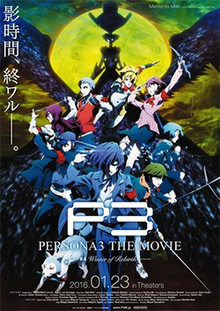

Persona 3: The Movie

The story of Persona 3 takes place in 2009, in a fictional city called Iwatodai, built and funded by the Kirijo Corporation. 10 years prior to the story, several experiments took place under the influence of Koetsu Kirijou, which ultimately created the Dark Hour, a period of time that exists between one day and the next. During this time, most people are turned into coffins and are oblivious to everything around them. However, there is a select group of people who are able to function during the Dark Hour. Those who can, possess an ability known as “The Potential”. The Dark Hour bends reality in numerous ways: the sky becomes an eerie green color, water becomes blood, but most importantly, Gekkoukan High School, where the main characters attend school during the day, becomes a huge, labyrinth-like tower known as Tartarus, home of the beasts known as Shadows, suppressed human emotions given physical form. During the Dark Hour, the Shadows prey on the minds of those still conscious.The Shadows leave their victims in near-catatonic states outside of the Dark Hour, known as “Apathy Syndrome”. To investigate and learn about the Dark Hour, Shadows, and Tartarus, the "Specialized Extracurricular Execution Squad", or SEES, was created by a group of high-schoolers who wield the Potential, which allows them to summon beings known as Personas to combat Shadows. Persona-users usually summon their Persona by firing a gun-like object called an Evoker at their head.